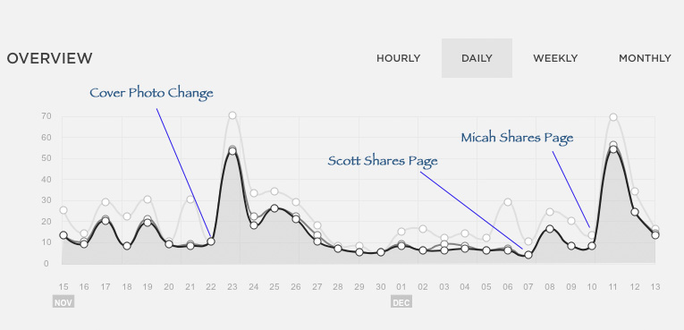

I haven't been very productive for the last few weeks, a combination of taking some time to be lazy, and projects that fell apart without making it to press. As a result I haven't posted any new pano content in several weeks. This, after a fall blitz in which I published more pictures in four weeks than I had in the previous year. This drop off in publication of new material really drives home just how important it is to consistently bring fresh material to market. The months of October and November saw Facebook reach of roughly 7,000 "organic" and 3,000 "paid" engagements. On the web site, this translated into just over 700 users during the same period.
With virtually no new content to my site in several weeks, I have some insight into a "quiet" state, and a few observations. Here is a daily traffic overview going back to mid November.

Cover Photo Changes are more likely to be seen than posts. I made several posts to promote the Aston Park panoramic, and they only garnered one or two shares and a few likes. My ego told me this was because it wasn't seen.... so I changed my Cover Photo. When that was liked, I made a comment with a link to the panoramic. This drove a nice spike in traffic, the next day with 53 visitors, and it seemed to have several days of residual effects. For now, a cover photo change is still a good way to get some organic reach.
Every share helps! My friend Scott who worked with me, found and shared my page, and it showed up clearly in the web traffic, driving 10-12 new users to my page. Many people don't realize that when they share a friends business site, it has a real impact on the visibility their business has.
Not all shares are equal. A good photographer friend has a very large following on Facebook, and he himself publishes amazing work on an almost daily basis. I will tell you from experience, that the public is fickle and it takes a lot of work to keep your audience engaged. Micah does this exceptionally well, and from time to time he shares a link to my work (and many other artists around Asheville). I'm not sure he understands the impact that has, his share drove over 50 people to the page the following day, and the residual effect is headed for a full weekend. This was with NO NEW CONTENT, he just extend the reach of the photo I had published in mid November.
With all the up's and downs of daily traffic, and the hit or miss nature of Facebook promotion it's easy to loose sight of the baseline 5-10 visitors a day that my site receives. I have found one very effective way to drive traffic to the site for extended periods of time. When I'm trying to do something, and I find a problem that's not answered in the support forums, and google searches don't work, I figure it out on my own. Nothing new there, but now I document what I did in a blog post, and go back to those forums that didn't have the answers and post a link to my solution. My forum posts on how to host complex flash content on Square Space drive 50 or more visitors a month to my site, with a steady trickle of traffic every day, week after week.
I will be taking this into account when I consider advertising with Facebook in the future. They have recently tuned their algorithms to boost monetization of your news feed. This is a calculated risk, in that they are tearing down the organic value of their platform to squeeze money out of your friends. While I will still use Facebook as a platform for publication and strive to attain good organic reach of new works, I will likely focus my real time and energy in marketing on finding problems to fix and communities to serve.